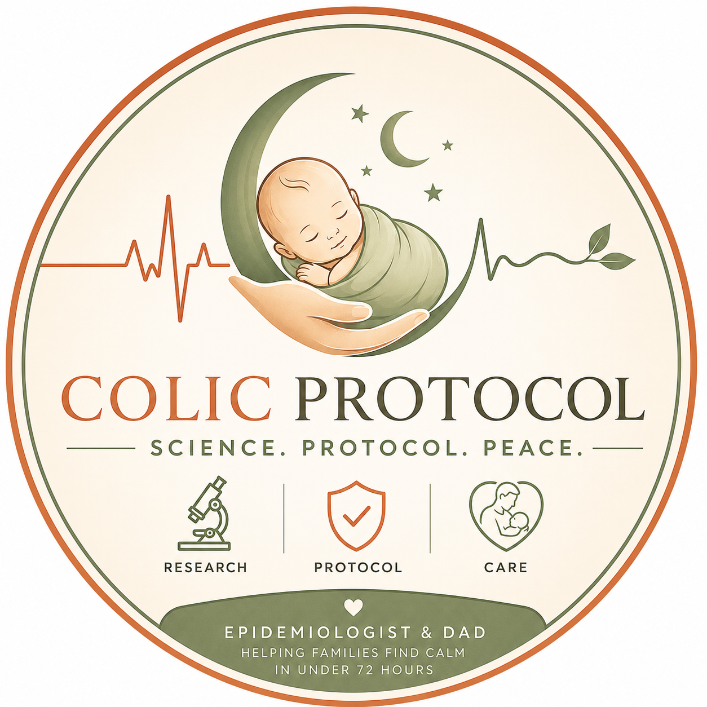
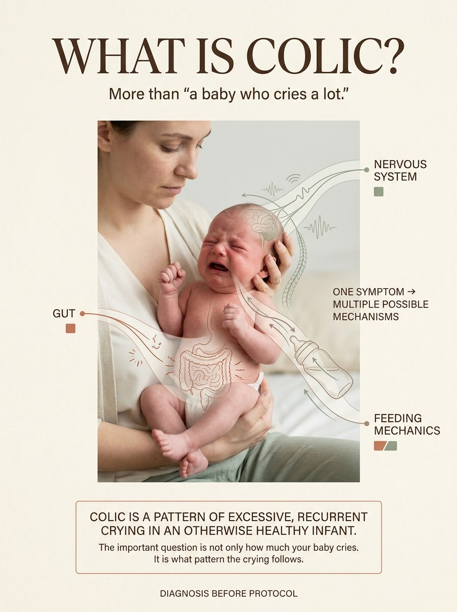
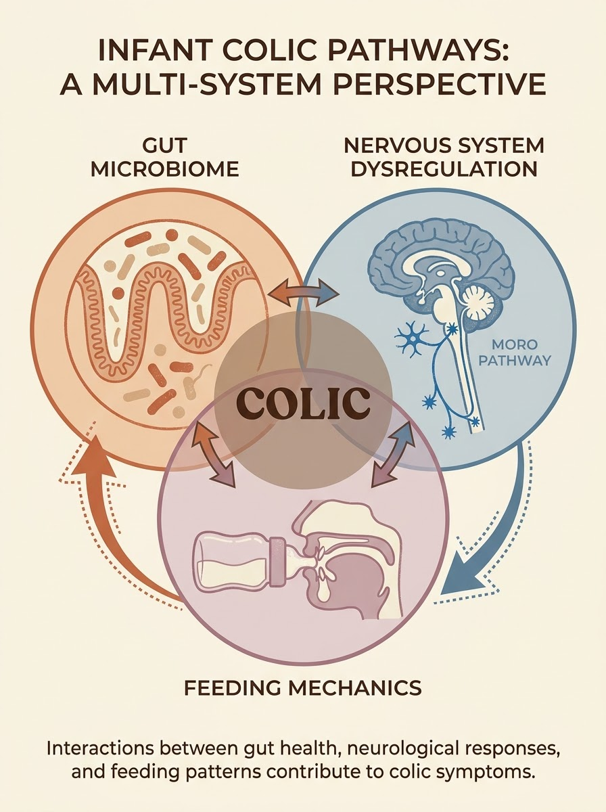
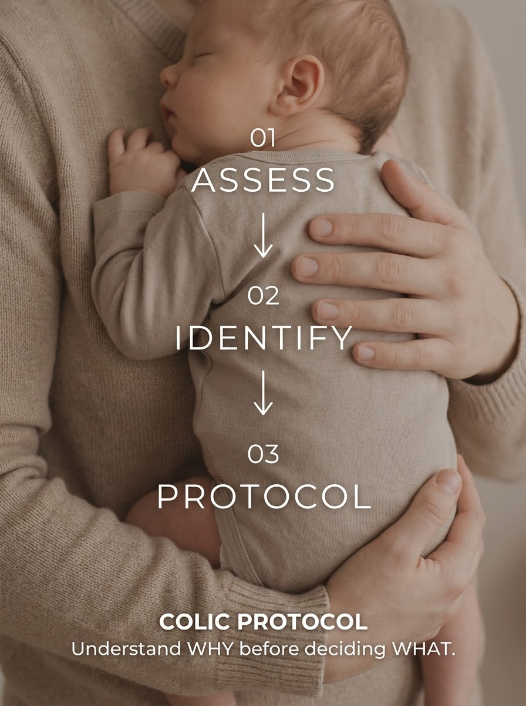
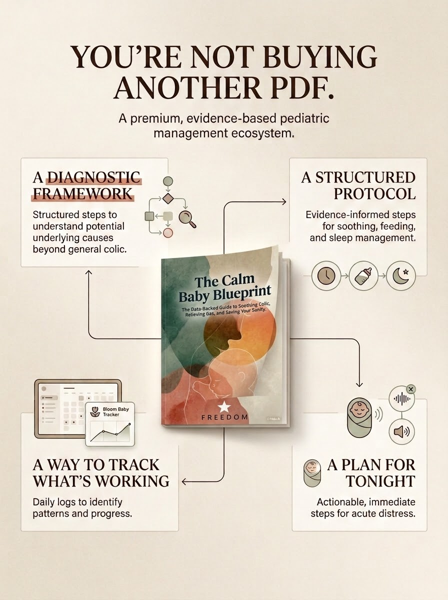

Most interventions fail because they skip the first step. Before you try anything else—find out which of three systems is actually driving the crying.

Gripe water fails because it addresses none of these systems. Gas drops fail because they treat the symptom, not the mechanism that produces it. Techniques like the Tiger Hold work temporarily but stop when they’re treating the wrong primary system. The fix isn’t a better single technique. It’s knowing which system to treat first.
Five questions sort your baby into a primary system: gut microbiome imbalance, nervous system dysregulation, or feeding mechanics. Your result routes you straight into tonight’s guided protocol, personalised to your type.

Free · No account needed · Result in under 2 minutes

Built from peer-reviewed research, not parenting anecdote. The diagnostic framework tells you which system is primary. The protocol tells you what to do about it. The bonuses make the whole system work at 3AM on a phone.
One-time · Instant download · 72-hour guarantee
Get the Calm Baby BlueprintThe Midnight Protocol is the guided, timed version of the evening protocol — free, 20 minutes, no purchase needed. It walks you through each step with built-in timers. Once you’ve taken the assessment, it personalises to your baby’s colic type automatically.
Open the free guided protocolFree · Timed · Works in 20 minutes
When Zion had severe colic at 3 weeks, I went back to the primary research instead of trying the next tip. What I found changed how I understood the problem entirely. The protocol I built from that research resolved it in 48 hours.